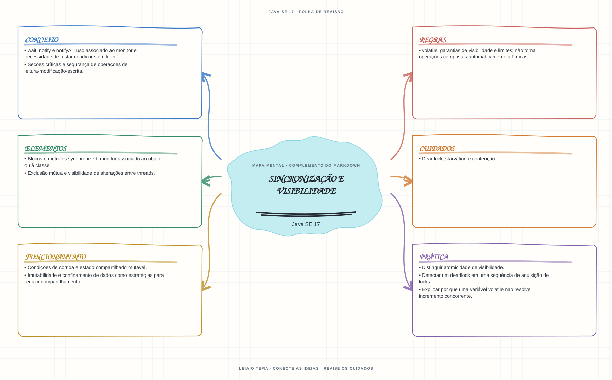

Ver mapa mental deste assuntoDiferenciar visibilidade, exclusão mútua e atomicidade no acesso a estado compartilhado.
Aprofundamento e revisão 1Z0-829: use esta página depois dos fundamentos. Os tópicos de prova complementam a trilha inicial e não são pré-requisitos para começar a programar.
- Leia o objetivo e localize a ideia principal no conteúdo abaixo.
- Preveja o resultado, compile e execute o exemplo.
- Faça a atividade sem copiar a solução e confira a checagem comentada.
EXEMPLO DE CONSOLE
Veja a regra em execução
Antes de executar, anote sua previsão. Compile o exemplo com o JDK e compare a saída observada com as regras deste assunto.
Comandos para compilar e executar
javac -d target/bin src/08-concorrencia/sincronizacao-e-visibilidade/SincronizacaoEVisibilidadeExample.java
java -cp target/bin SincronizacaoEVisibilidadeExampleA execução imprime o resultado no console para você comparar com sua previsão.
Consultar código-fonte: SincronizacaoEVisibilidadeExample.java
public class SincronizacaoEVisibilidadeExample {
private static class Contador {
private int valor;
synchronized void incrementar() {
valor++;
}
synchronized int obterValor() {
return valor;
}
}
public static void main(String[] args) throws InterruptedException {
System.out.println("=== Sincronizacao, atomicidade e visibilidade ===");
System.out.println("incrementar() e sincronizado: apenas uma thread acessa o monitor por vez.");
System.out.println("join() aguarda o fim das tarefas antes de obter o resultado.");
Contador contador = new Contador();
Runnable tarefa = () -> {
for (int i = 0; i < 1000; i++) {
contador.incrementar();
}
};
Thread primeira = new Thread(tarefa);
Thread segunda = new Thread(tarefa);
primeira.start();
segunda.start();
primeira.join();
segunda.join();
System.out.println("Valor final esperado (2 threads x 1000 incrementos): "
+ contador.obterValor());
}
}
PRATIQUE AGORA
Faça uma pequena alteração por conta própria
Use duas threads para atualizar um contador compartilhado; compare o resultado sem sincronização e com uma seção synchronized.
Concluído quando: o programa compilar, produzir o resultado esperado e você conseguir explicar a regra aplicada.
CHECAGEM RÁPIDA · Sincronização e visibilidade
Uma variável volatile torna contador++ atômico?
Conferir resposta comentada
Não. volatile garante propriedades de visibilidade e ordenação, mas incremento é leitura-modificação-escrita; use sincronização ou um tipo atômico.
Estude
- Condições de corrida e estado compartilhado mutável.
- Blocos e métodos
synchronized; monitor associado ao objeto ou à classe. - Exclusão mútua e visibilidade de alterações entre threads.
volatile: garantias de visibilidade e limites; não torna operações compostas automaticamente atômicas.- Imutabilidade e confinamento de dados como estratégias para reduzir compartilhamento.
- Deadlock, starvation e contenção.
wait,notifyenotifyAll: uso associado ao monitor e necessidade de testar condições em loop.- Seções críticas e segurança de operações de leitura-modificação-escrita.
Verifique se consegue
- Distinguir atomicidade de visibilidade.
- Detectar um deadlock em uma sequência de aquisição de locks.
- Explicar por que uma variável
volatilenão resolve incremento concorrente.
Como este capítulo se relaciona com cada exame
Fundamentos reaproveitáveis; confira APIs disponíveis e objetivos de Java 8.
Base de estudo deste portal; confirme o mapeamento com o blueprint vigente.
Conceitos úteis; revise virtual threads e APIs Java 21 aplicáveis.
Orientação editorial sobre reaproveitamento do material; não representa objetivos oficiais nem garante cobertura do exame. Consulte o comparativo e as fontes da Oracle.